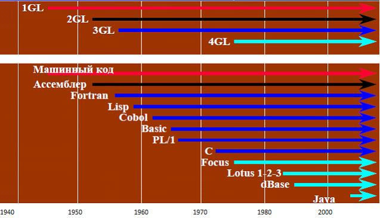

Окружение 4-го поколения
Аббревиатура 4GL представляет собой сокращенный английский вариант написания термина язык четвертого поколения (Fourth-Generation Language).
Четкого определения этого понятия не существует, хотя, по сути, речь идет о некотором стенографическом варианте языка программирования. Если для организации некоторой операции с данными на языке третьего поколения (3GL) типа COBOL потребуется написать сотни строк кода, то для реализации этой же операции на языке четвертого поколения достаточно 10-20 строк
История языков программирования
С начала 70-х годов по настоящее время продолжается период языков четвертого поколения (4GL). После первых восторгов по поводу безграничных способностей ЭВМ стали более ясны возможности существующих языков программирования. Несмотря на рождение новых технологий (ООП, визуальное программирование, CASE-методологии, системный анализ), процесс создания больших программных комплексов оказался очень трудоемкой задачей, так как для реализации крупных проектов требовался более глобальный подход, чем тот, который предлагали имевшиеся средства разработки. Языки 4GL частично снимали эту проблему. Целью их создания было стремление увеличить скорость разработки проектов, снизить число ошибок и повысить общую надежность работы больших программных комплексов, получить возможность быстро и легко вносить изменения в готовые проекты, активно внедрять технологии визуальной разработки и т. д.
Все языки четвертого поколения интегрированы в мощные пользовательские оболочки и обладают простым и удобным интерфейсом. Они чаще всего используются для проектирования баз данных и работы с ними (встроенные языки СУБД), что объясняется возможностью формализации всех понятий, используемых при построении реляционных баз данных. Языки 4GL активно применяются в различных специализированных областях, где высоких результатов можно добиться, используя не универсальные, а проблемно-ориентированные языки, оперирующие конкретными понятиями узкой предметной области. Как правило, в эти языки встраиваются мощные примитивы, позволяющие в одном операторе описать такую функциональность, для реализации которой на языках младших поколений потребовались бы тысячи строк кода.
Становление и развитие языков программирования могут быть схематически отображены на рис. 4

Рисунок 4 - История языков программирования
Понятие языка четвертого поколения
Языки четвертого поколения (4GL) отличаются от других языков программирования тем, что они:
- представляют собой широкий набор средств, ориентированных на проектирование и разработку программного обеспечения. Они строятся на основе оперирования не синтаксическими структурами языка и описания элементов, а представляющими их графическими образами;
- высокоуровневые языки, могут использовать английский язык или визуальные конструкции; алгоритмы и структуры данных обычно выбираются компилятором;
- созданные для конкретных задач языки программирования, позволяющие увеличить производительность разработки систем.
Выделяют следующие типы языков четвертого поколения:
- языки представления информации, например языки запросов или генераторы отчетов;
- специализированные языки, например языки электронных таблиц и баз данных;
- генераторы приложений, которые при создании приложений обеспечивают определение, вставку, обновление или извлечение сведений из базы данных;
- языки очень высокого уровня, предназначенные для генерации кода приложений.
Языки 4GL могут быть непосредственно встроены в сами СУБД, а могут существовать в виде отдельных сред программирования. В последнем случае в таких средах разрабатываются прикладные части информационных систем, реализующие только интерфейс и высокоуровневые функции по обработке данных. За низкоуровневым, как говорят, «сервисом» к данным такие прикладные системы обращаются к SQL-серверам, являющимися отдельными специализированными разновидностями СУБД. «Общение» между прикладными системами и SQL-серверами происходит соответственно на языке SQL.
Свои языки 4GL имеют практически все развитые профессиональные СУБД-Orac/e, SyBase, Informix, Ingres, DB2, СУБД ЛИНТЕР. Кроме того, существующие CASE-средства автоматизированного проектирования - PowerBuilder фирмы PowerSoft, Oracle Designer фирмы Oracle, SQLWindows фирмы Gupta и др., также, как правило, имеют свои встроенные языки 4GL.
Преимущества 4GL:
- увеличение скорости разработки проектов;
- снижение числа ошибок и повышение общей надежности работы больших программных комплексов;
- возможность быстрого и легкого внесения изменений в готовые проекты;
- упрощение самих языков для конечного пользователя;
- активное внедрение технологий визуальной разработки;
- все средства разработки 4-го покления имеют мощные интегрированные оболочки и обладают простым и удобным пользовательским интерфейсом;
- использование для проектирования баз данных и работы с ними (встроенные языки СУБД).
Недостатки 4GL:
- необходимо кодировать программу вручную, используя обычный процесс последовательного ввода команд;
- языки 4-го поколения (также как и предыдущих поколений) в значительной степени ориентированы на чуждую человеческому мышлению чисто компьютерную идеологию (работа с памятью, переменными, базами данных, последовательностями абстрактных операторов и т. п.), что требует от людей хорошего понимания принципов функционирования компьютера и операционных систем;
- существование парадигмы функционального программирования, которая не позволяет перейти к более высокому уровню абстракций при разработке программных систем.
Процедурные расширения
Поскольку SQL не является «привычным» языком программирования (то есть не предоставляет средств для построения циклов, ветвлений и т. д.), вводимые разными производителями расширения касались в первую очередь процедурных расширений. Это хранимые процедуры (stored procedures) и процедурные языки-«надстройки». Практически в каждой СУБД применяется свой процедурный язык. Стандарт для процедурных расширений представлен спецификацией SQL/PSM. Перечень процедурных расширений для самых популярных СУБД приведён в таблице 2.
Таблица 2 - Перечень процедурных расширения SQL
СУБД | Краткое имя | Описание |
Borland InterBase / Firebird | PSQL | Procedural SQL |
IBM DB2 | SQL PL | SQL Procedural Language (расширяет SQL/PSM); также в DB2 хранимые процедуры могут быть написаны на обычных языках программирования (С, Java и т.п.) |
MicrosoftSQL Server / SybaseASE | Transact-SQL | Transact-SQL |
MySQL | SQL/PSM | SQL/Persistent Stored Module (соответствует стандарту SQL:2003) |
Oracle | PL/SQL | Procedural Language/SQL (основан на языке Ada) |
PostgreSQL | PL/pgSQL | Procedural Language/PostgreSQL Structured Query Language (похож на Oracle PL/SQL) |
Рассмотрим подробнее некоторые из возможностей перечисленных языков.
Язык PSQL
PSQL - Procedural SQL - разновидность, применяемая при создании хранимых процедур/триггеров/PSQL-блоков. Имеет управляющие структуры FOR, WHILE, IF.
Используя язык PSQL (процедурный SQL) Firebird, возможно создавать сложные хранимые процедуры для обработки данных полностью на стороне сервера. Для генерации отчётов особенно удобны хранимые процедуры с возможностью выборки, возвращающие данные в виде набора записей. Такие процедуры можно использовать в запросах точно так же как и обычные таблицы. Также для каждой таблицы возможно назначение нескольких триггеров, срабатывающих до или после вставки, обновления или удаления записей. Для триггеров используется язык PSQL, позволяя вносить начальные значения, проверять целостность данных, вызывать исключения, и т. д. В Firebird 1.5 появились «универсальные» триггеры, позволяющие в одном триггере обрабатывать вставки, обновления и удаления записей таблицы
Язык SQL PL
Хранимые процедуры DB2 могут быть написаны с использованием C/C++, COBOL, Java (JDBC или SQLJ), .NET (языки, совместимые с CLR), и SQL Procedure Language (SQL PL). Для написания хранимых процедур разработчик может выбрать любой язык, однако наиболее часто используемыми языками являются Java и SQL PL.
Хранимые процедуры на SQL Procedure Language (SQL PL) рассматриваются как собственные, присущие среде DB2, поскольку они хранятся в базах данных DB2 для Windows или Linux как объекты. SQL PL развивался как единственный язык хранимых процедур на основе стандартов ANSI SQL. SQL PL поддерживается всеми представителями семейства серверов базы данных DB2 для Linux, UNIX, Windows, iSeries, и z/OS. DB2 Express-C предоставляет очень полезный графический инструмент, Development Center, для управления процессами разработки, тестирования и развертывания хранимых процедур SQL, включая процедуры Java и SQL PL. Поскольку выполнение хранимой процедуры может в деталях контролироваться DB2, она обеспечивает удобный метод обеспечения безопасности доступа пользователей к данным DB2.
Язык Transact-SQL
Transact-SQL (T-SQL) - процедурное расширение языка SQL компаний Microsoft (для Microsoft SQL Server) и Sybase (для Sybase ASE).
Язык T-SQL - это разновидность языка SQL, определяемого стандартом ANSI, которая применяется исключительно в СУБД Server SQL. Язык T%SQL совместим со стандартом ANSI 92 в минимальной конфигурации, а также включает целый ряд собственных расширений. В СУБД SQL Server в целях обеспечения обратной совместимости допускается использование множества различных вариантов синтаксиса, которые фактически не отличаются по своим возможностям от синтаксиса, соответствующего стандарту ANSI, но везде, где это возможно, следует использовать форму ANSI.
SQL был расширен такими дополнительными возможностями как:
- управляющие операторы;
- локальные и глобальные переменные;
- различные дополнительные функции для обработки строк, дат, математики и т. п.;
- поддержка аутентификации Microsoft Windows.
Язык Transact-SQL является ключом к использованию MS SQL Server. Все приложения, взаимодействующие с экземпляром MS SQL Server, независимо от их реализации и пользовательского интерфейса, отправляют серверу инструкции Transact-SQL.
В Transact-SQL существуют специальные команды, которые позволяют управлять потоком выполнения сценария, прерывая его или направляя в нужную логику.
К управляющим структурам языка относят:
- блок группировки - структура, объединяющая список выражений в один логический блок (BEGIN … END);
- блок условия - структура, проверяющая выполнения определенного условия (IF … ELSE);
- блок цикла - структура, организующая повторение выполнения логического блока (WHILE … BREAK … CONTINUE);
- переход - команда, выполняющая переход потока выполнения сценария на указанную метку (GOTO);
- задержка - команда, задерживающая выполнение сценария (WAITFOR);
- вызов ошибки - команда, генерирующая ошибку выполнения сценария (RAISERROR).Спецификация Transact-SQL значительно расширяет стандартные возможности SQL благодаря большорму набору операторов, встроенным функциям и выражениям
Язык SQL/PSM
SQL/PSM - определяет процедурные расширения языка SQL.
Этот уровень соответствия полностью описан в документе SQL/PSM стандарта SQL99. Так, язык SQL расширяется операторами управления CASE, IF,WHILE, REPEAT, LOOP и FOR. Вводится поддержка процедур и функций, создаваемых операторами CREATE PROCEDURE и CREATE FUNCTION. В язык SQL введено использование переменных и применение обработчиков ошибок.
До появления SQL/PSM переменные в SQL использовать было нельзя. С появлением SQL/PSM SQL наконец-то получил возможность, которую всегда имели даже самые примитивные процедурные языки, - возможность присваивания значения переменной. SQL/PSM получил в свое распоряжение аналогичные управляющие структуры, позволяя тем самым решать многие задачи без привлечения других языков программирования.
Хранимые процедуры (stored procedures) находятся на сервере баз данных, а не на компьютере пользователя (до появления SQL/PSM). Хранимая процедура должна быть определена, после чего ее можно вызвать с помощью команды CALL. Хранение процедуры на сервере уменьшает сетевой обмен и повышает производительность. Команда CALL является единственным сообщением, передаваемым от пользователя к серверу.Также SQL/PSM добавляет к уже существующим еще один вид полномочий - полномочия на выполнение.
Язык PL/SQL
PL/SQL - процедурный язык, разработанный фирмой Oracle для написания хранимых в БД подпрограмм. PL/SQL обеспечивает общую основу процедурного программирования как в клиентских приложениях, так и на стороне сервера, в том числе хранимых на сервере подпрограмм, пакетов и триггеров базы данных.
PL/SQL - это полностью переносимый, высокопроизводительный язык, предлагающий следующие преимущества:
- поддержку SQL;
- повышение продуктивности разработки ;
- улучшение производительности выполнения ;
- переносимость ;
- интеграцию с ORACLE .
Поддержка SQL. SQL стал признанным языком баз данных благодаря своей гибкости, мощи и простоте изучения. Небольшое число предложений, напоминающих естественный английский язык, позволяет легко манипулировать данными, хранящимися в реляционной базе данных. PL/SQL позволяет вам использовать как все предложения манипулирования данными языка SQL, команды управления курсорами и транзакциями, так и все функции, операторы и псевдостолбцы SQL. Таким образом, вы имеете возможность гибко и безопасно манипулировать данными ORACLE.
Улучшенная продуктивность. PL/SQL придает дополнительную функциональность непроцедурным инструментам, таким как SQL*Forms, SQL*Menu и SQL*ReportWriter. Когда PL/SQL встроен в эти инструменты, разработчики программного обеспечения могут использовать привычные конструкты процедурных языков при написании приложений.
Например, можно ввести целый блок PL/SQL как процедуру или функцию. Таким образом, улучшенный инструментарий в руках разработчиков повышает продуктивность разработки. Более того, PL/SQL один и тот же в любом окружении. Поэтому, освоив PL/SQL с одним инструментом, разработчики могут улучшить свою продуктивность во всех прочих инструментах, поддерживающих PL/SQL.
Улучшенная производительность. Без PL/SQL система ORACLE должна обрабатывать предложения SQL по одному за раз. Каждое предложение SQL приводит к очередному обращению к ORACLE и дополнительным накладным расходам. Эти накладные расходы могут стать существенными, когда вы выдаете много предложений SQL в сетевой среде. Каждое выдаваемое предложение SQL должно быть послано по сети, утяжеляя сетевой трафик. При PL/SQL, однако, целый блок предложений может быть послан в ORACLE за один раз. Это позволяет радикально сократить общение между приложением и ORACLE.
PL/SQL повышает производительность. PL/SQL может также взаимодействовать с инструментами разработки приложений Oracle, такими как SQL*Forms, SQL*Menu и SQL*ReportWriter. Добавляя мощь процедурной обработки в такие инструменты, PL/SQL увеличивает их производительность. При помощи PL/SQL инструмент способен выполнять все вычисления с данными быстро и эффективно, не обращаясь к ORACLE. Это экономит время, а в сетевом окружении уменьшает сетевой трафик.
Переносимость. Приложения, написанные на PL/SQL, переносимы на любое оборудование и в среду любой операционной системы, на которых выполняется ORACLE. Иными словами, программы PL/SQL могут выполняться всюду, где может выполняться ORACLE; вам не требуется перенастраивать их на каждое новое окружение. Это значит, что вы можете разрабатывать библиотеки переносимых программ, которые можно использовать в различных окружениях.
Интеграция с ORACLE. Как PL/SQL, так и ORACLE основываются на SQL. Более того, PL/SQL поддерживает все типы данных SQL. В сочетании с прямым доступом к ORACLE, который обеспечивает SQL, эти объявления естественных для ORACLE типов данных интегрируют PL/SQL со словарем данных ORACLE.
Модульность. Модульность позволяет вам разбивать приложение на управляемые, хорошо определенные логические модули. Путем последовательного уточнения вы можете свести комплексную проблему к множеству простых проблем, имеющих легко реализуемые решения. PL/SQL предлагает для этой цели конструкты, называемые ПРОГРАММНЫМИ ЕДИНИЦАМИ. Помимо таких программных единиц, как блоки и подпрограммы, предусматривается специальный конструкт ПАКЕТ, который позволяет вам группировать взаимосвязанные объекты программы в единицы большего размера.
Язык программирования 4-го поколения 4GL Informix
Включает следующие возможности:
- средства стандартных языков программирования 3-го поколения;
- программные переменные;
- изготовление операторов по ходу программы;
- операторы манипуляции базой данных. SQL;
- переброска данных из базы данных в програмные переменные, и обратно;
- курсоры;
- печать результатов запросов, формирование отчетов;
- экранный обмен с пользователем;
- меню, окна;
- экранные формы, экранные поля, экранные массивы;
- файл описания экранной формы;
- файлы с исходными текстами;
- описание состава программы.
Язык DataFlex
DataFlex - это объектно-ориентированный язык программирования 4-го поколения и система управления базами данных . Он позволяет создавать надёжные, масштабируемые, переносимые и производительные приложения. Сохраняя преемственность поколений, он предлагает ту же методологию и структуру построения прикладных программ, которая используется в Visual DataFlex.
DataFlex является полностью переносимой средой разработки. Приложения, работающие в текстовом режиме, могут быть созданы для Microsoft Windows, GNU/Linux и основных UNIX-систем. Код приложения может легко переноситься в любую из поддерживаемых платформ без каких-либо дополнительных операций, за исключением перекомпиляции.
DataFlex 3.2 в комплексе с Visual DataFlex может предложить полностью переносимые решения для большинства наиболее популярных сред - Microsoft Windows, Unix.
Программы, созданные на Visual DataFlex используются более чем на 450 тысячах предприятий и организаций, работающих в области здравоохранения, транспорта, промышленного производства, экономики и финансов, дистрибуции, страхования, сельского хозяйства, армии, полиции и многих других.
Поддерживаемые операционные системы
- GNU/Linux;
- UNIX;
- консольный режим Windows;
Поддерживаемые СУБД. DataFlex имеет встроенную поддержку четырёх промышленных СУБД:
- Oracle;
- Microsoft SQL Server;
- IBM DB2;
- Pervasive PSQL;
- а также любые СУБД по стандарту ODBC. От сторонних разработчиков доступны драйвера данных для PostgreSQL и MySQL.
Преимущества DataFlex:
- встроенная система управления базами данных с поддержкой транзакций и высокой производительностью;
- база данных DataFlex широко известна в мире благодаря своей скорости, надёжности и простоте администрирования. Сотни пользователей одновременно и миллионы записей в базе данных не составляют никаких проблем для данной СУБД;
- возможность использования клиент-серверной архитектуры DataFlex поддерживает использование драйверов баз данных для MS SQL, IBM DB2 и ODBC в консольном режиме Windows. DB2 также поддерживается на GNU/Linux. Драйвера от сторонних производителей дают возможность использовать Oracle и MySQL;
- поддержка очень больших приложений DataFlex может поддерживать до 4095 таблиц базы данных в каждом отдельном приложении.
Язык Progress 4GL
Progress 4GL - это высокоуровневый язык программирования четвёртого поколения (4GL), разработанный в Progress Software Corporation.
Progress 4GL является высокоуровневым, процедурным языком разработки приложений, который позволяет удовлетворять всем требованиям, предъявляемым к современным приложениям, в то же время уменьшая сложность и повышая производительность их разработки.
4GL содержит все необходимые программные конструкции для решения самых различных аспектов программирования сложных приложений без необходимости прибегать к менее эффективным и менее переносимым языкам третьего поколения. Кроме этого, 4GL обеспечивает поддержку и переход между тремя основными принципами программирования: структурированным, событийно-управляемым и объектно-ориентированным, - от Вас не требуется осваивать новые принципы программирования для того, чтобы успешно работать с PROGRESS. Для завершения процесса разработки промышленного приложения Вам потребуются средства разработки не только логики взаимодействия с пользователем, но также потребуются средства для решения таких важных задач, как:
- автоматический контроль транзакций и блокирование записей;
- получение и обработка информации из баз данных;
- сложные вычисления и обработка данных;
- пакетная обработка;
- генерация отчетов;
- целостность базы данных и требования безопасности;
- поддержка двухбайтовых кодировок.
Язык 4GL содержит все функции и операторы, необходимые для удовлетворения вышеперечисленных требований. Но, в отличие от остальных инструментальных средств, менее ориентированных на разработку приложения в архитектуре клиент/сервер, PROGRESS не требует использования различных языков программирования для отдельного программирования обработки данных на клиенте, серверных процессов и пакетной обработки на сервере. Всё это уменьшает стоимость затрат по изучению языка и продолжению разработки.
Используется в СУБД Progress. Кроме традиционных SQL-запросов, реализация поддержки которых не очень удобна, позволяет использовать выражения FOR EACH,FIND, FIND FIRST. Кроме того, существует возможность сокращённого написания операторов.
При этом очевидны недостатки:
- язык SQL служит для описания запросов, а не для их программирования, в то время как на 4GL приходится именно программировать запросы;
- многие вещи, с которыми СУБД типа Oracle или MS SQL Server прекрасно справляются в автоматическом режиме, в Progress приходится прописывать явно;
- не слишком удобные и не богатые средства для манипуляции и визуализации данных;
- Progress имеет всего три типа блокировок и не слишком интеллектуально работает с индексами.
Преимущество, заключающееся в том, что помимо средств манипуляции данными в языке содержатся средства для создания интерфейса немного сомнительно, так как приводит к созданию однозвенного приложения.
В связи с этим ни язык 4GL, ни СУБД Progress не получили широкое распространение.
В заключение следует отметить, что в последнее время наметилась тенденция встраивания развитых языков уровня 4GL и в СУБД для конечных пользователей.